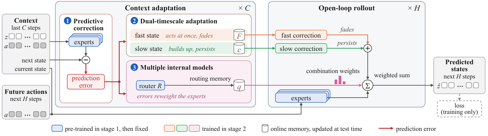
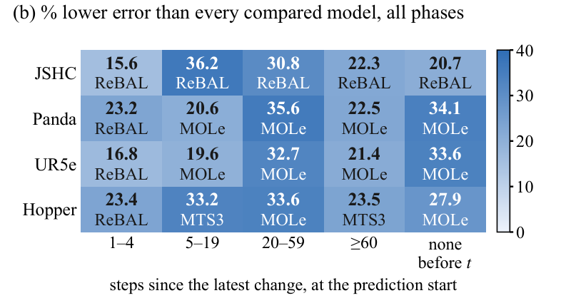
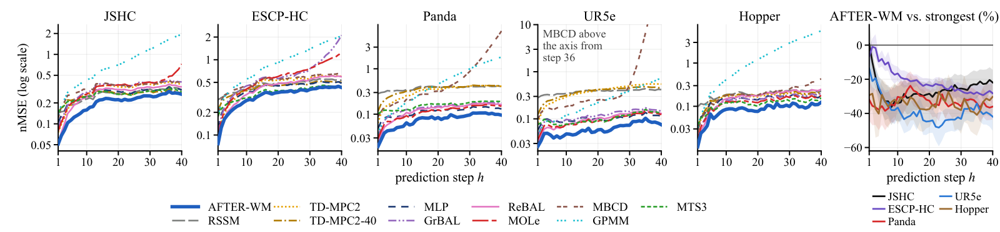
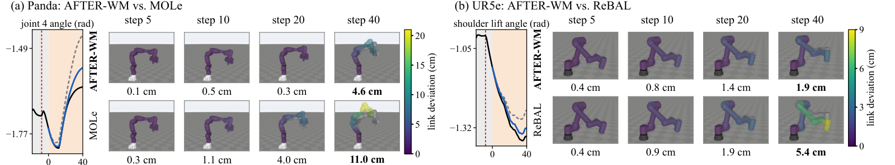
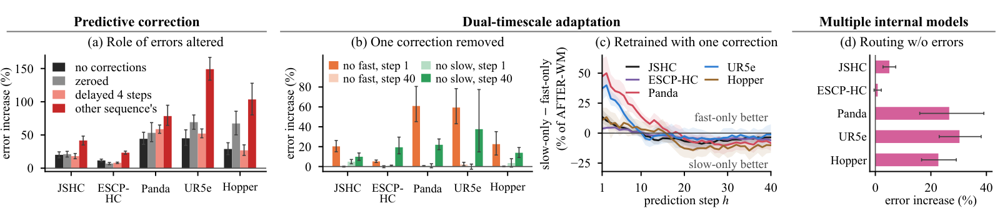
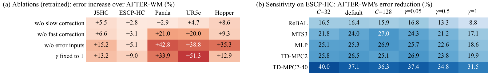

AFTER: A World Model with Adaptive Fast–Slow Timescales for Error-Driven Retention
Anonymous authors
In robotics and embodied AI, a core challenge for world models is adapting to sudden, persistent, yet initially unknown changes in robot dynamics during interaction. For instance, when a robotic arm grasps an object with an unknown payload, the robot dynamics change suddenly. If the world model fails to adapt, its prediction errors accumulate over the open-loop rollout and ultimately mislead the robot's actions. Existing world models, however, struggle to simultaneously satisfy three critical requirements for dynamics adaptation: responsiveness, reacting promptly to sudden changes to curb prediction error accumulation; stability, distinguishing persistent changes from transient disturbances to prevent incorrect updates; and persistence, retaining the adapted dynamics without new observations so that later predictions do not revert to the old dynamics. Inspired by predictive coding in the human brain with multi-timescale adaptation, we propose AFTER-WM, a world model with Adaptive Fast–slow Timescales for Error-driven Retention, whose prediction errors drive a fast correction that fades and a slow correction that persists, while dynamically adjusting the combination weights of pre-trained experts without altering them, to overcome the trade-offs among responsiveness, stability and persistence. On five simulated robot datasets and real UAV data, AFTER-WM has a lower multi-step mean error than all ten compared models and the highest mean return in a joint-failure control task. In simulation, its multi-step mean error is 16%–34% below the strongest compared model's and is also the lowest 1–4 steps after a change and under transient disturbances alone, and its step-40 error is the lowest as well, reflecting responsiveness, stability and persistence.

Figure 2 of the paper. Architecture of AFTER-WM. In context adaptation, the experts' prediction errors update the online memories. In the open-loop rollout, the experts' predictions get the fast and slow corrections and are summed with the combination weights.
| Part | Path | Files to open |
|---|---|---|
| Method | afterwm/ |
afterwm/model.py, afterwm/stage1.py |
| Compared models | baselines/ |
baselines/rssm.py, baselines/tdmpc2.py, baselines/tdmpc2_h40.py, baselines/mlp.py, baselines/grbal.py, baselines/rebal.py, baselines/mole.py, baselines/mbcd.py, baselines/gpmm.py, baselines/mts3.py |
| Training and evaluation pipeline | pipeline/ |
pipeline/trainer.py, pipeline/evaluate.py |
| Choices made on validation data | selection/ |
selection/gamma.py |
| Experiments | experiments/ |
experiments/all_from_outputs.sh |
| Statistics and figures | afterwm_stats/, figures/ |
afterwm_stats/paper_numbers.py, figures/table1.py |
| Overview | README.md |
README.md |
| How to run | docs/ |
docs/REPRODUCE.md |
| Results map | docs/ |
docs/RESULTS_MAP.md |
| Fixed identifiers | docs/ |
docs/FIXED_IDENTIFIERS.md |
Six datasets: five simulated in MuJoCo and one of real flights. Two more folders hold data that are used for evaluation only. Each sequence has 300 transitions. The column "Sequences per split" gives training / validation / test / TEST_B (the paper's TE-B).
| Dataset | What changes | Sequences per split | Size of the folder (bytes) | Data files | Card |
|---|---|---|---|---|---|
| JSHC | Joint-Switch HalfCheetah: a random leg joint loses power every 100 steps. | 288 / 144 / 144 / 144 | 14,025,317 | jshc_train.npz, jshc_val.npz, jshc_test.npz, jshc_testB.npz |
jshc.md |
| ESCP-HC | HalfCheetah: gravity, joint damping and torso mass are scaled by new random factors every 100 steps. | 288 / 144 / 144 / 144 | 24,201,632 | escphc_train.npz, escphc_val.npz, escphc_test.npz, escphc_testB.npz |
escphc.md |
| ESCP-HC beyond the training range | ESCP-HC test data with the factors 1.5u drawn with u ~ U(−4, 4) instead of U(−3, 3); used for evaluation only. | — / — / 144 / 144 | 9,682,408 | escphc_test.npz, escphc_testB.npz |
escphc_beyond.md |
| Panda | The payload, joint friction and motor strength of the arm change. A change happens once or several times, may go back or drift slowly, and transient disturbances such as pulses and impacts occur in between. | 288 / 144 / 144 / 144 | 8,540,148 | panda_train.npz, panda_val.npz, panda_test.npz, panda_testB.npz |
panda.md |
| UR5e | The payload, joint friction and motor strength of the arm change. A change happens once or several times, may go back or drift slowly, and transient disturbances such as pulses and impacts occur in between. | 288 / 144 / 144 / 144 | 7,244,120 | ur5e_train.npz, ur5e_val.npz, ur5e_test.npz, ur5e_testB.npz |
ur5e.md |
| Hopper | The torso mass, ground friction and motor strength change. A change happens once or several times, may go back or drift slowly, and transient disturbances such as pulses and impacts occur in between. | 288 / 144 / 144 / 144 | 6,422,643 | hopper_train.npz, hopper_val.npz, hopper_test.npz, hopper_testB.npz |
hopper.md |
| ALFA | Real data: sequences cut from public fixed-wing UAV flights with engine or control-surface faults. | 240 / 86 / 100 / 122 | 10,607,244 | alfa_train.npz, alfa_val.npz, alfa_test.npz, alfa_testB.npz |
alfa.md |
| Control episodes | Start conditions of the 48 test episodes of the joint-failure control task on JSHC; used for evaluation only. | 48 episodes (test) | 364,164 | episodes_test_v1.npz |
control_episodes.md |
More on the data: data/README.md (datasheet), docs/DATASETS.md (overview), DATA_LICENSE.md (licence).
The table lists which items of the paper are covered. In the default mode the scripts run on a CPU, read the stored outputs in outputs/ and write to results/. docs/REPRODUCE.md explains how to run them.
| Paper item | Script | What it writes |
|---|---|---|
| Table 1 | experiments/table1_main.sh |
the numbers equal Table 1 of the paper |
| Table 2 | experiments/table2_beyond_range.sh, table2_no_change.sh, table2_alfa.sh, table2_control.sh; the table itself is written by experiments/all_from_outputs.sh |
the four rows of Table 2 |
| Fig. 1b | experiments/fig1b_change_phases.sh |
the error reduction by change phase |
| Fig. 3 | experiments/fig3_per_step.sh |
the per-step errors |
| Fig. 4 | experiments/fig4_robot_arm_examples.sh |
arm poses at steps 5, 10, 20, 40 with the link deviations |
| Fig. 6 | experiments/fig6a_errors_altered.sh, fig6b_one_correction_removed.sh, fig6c_retrained_one_correction.sh (draws the figure), fig6d_routing_without_errors.sh |
the tests of the three designs |
| Fig. 7 | experiments/fig7a_ablations.sh, fig7b_sensitivity.sh (draws the figure) |
ablations and hyperparameter sensitivity |
| Numbers in the text of Sec. 4.2, 4.4, 4.5, 4.6 and the 16%–34% of the abstract | experiments/all_from_outputs.sh → results/paper_numbers.json |
queries without a change and with transient disturbances: experiments/sec42_windows.sh |
| Supplementary text numbers that follow from the same stored outputs (per-step comparisons, change phases, alterations, removal by phase, models retrained with one correction, linear probes, control) | experiments/all_from_outputs.sh, experiments/supp_e3_probes.sh |
listed key by key in docs/RESULTS_MAP.md |

Figure 1b of the paper. AFTER-WM's error reduction over the closest compared model.

Figure 3 of the paper. Per-step error of all models on the five simulated datasets (left); AFTER-WM vs. the strongest compared model (right).

Figure 4 of the paper. Joint angles predicted by AFTER-WM and the strongest compared model, drawn as arm poses and starting 8 steps after a change.

Figure 6 of the paper. Tests of the three designs: alterations at test time in (a), (b) and (d), and retrained models in (c). On UR5e, (b) and (d) use 4 seeds.

Figure 7 of the paper. Multi-step mean error. (a) Ablations, retrained at about 0.70M parameters. (b) Sensitivity to C and γ on ESCP-HC.
Code: MIT (LICENSE). Datasets and stored outputs: CC BY 4.0 (DATA_LICENSE.md); the ALFA sequences keep ALFA's CC BY 4.0. Third-party code and data: THIRD_PARTY_NOTICES.md. The images on this page are figures of the paper, shown for reference; they are not covered by the MIT or CC BY 4.0 grants of this repository.